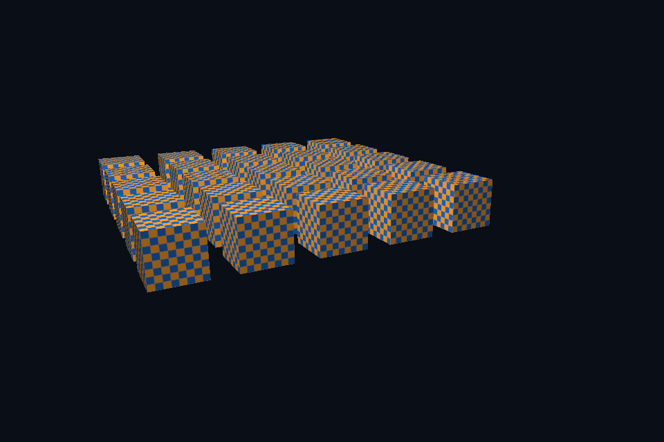

vk07_depth_instancing · 深度与实例化
路线首页 · 上一课 · 下一课
构建和运行
从仓库根目录执行，完成配置后后续只需 build：
cmake --preset vulkan-native
cmake --build --preset vulkan-native-debug --target vk07_depth_instancing --parallel 4
.\Vulkan\native\build\bin\Debug\vk07_depth_instancing.exe
也可以通过根目录“开始学习.cmd”打开页面后点击“运行本课”。01/08 是控制台计算/设备检查示例，点击后可用“查看运行输出”阅读结果。其余示例 Esc 退出，拖动窗口可测试尺寸重建。
预期结果：一次提交绘制 25 个棋盘立方体。
先读哪些代码
scene.vert gl_InstanceIndex → SceneVk::render(instanceCount=25) → depth attachment barriers。
本目录 main.cpp 选择本课的执行路径。完整 API 实现在 common/native_app.hpp 与 ../common/scene_vk.hpp（相对路线根目录），数学和网格在仓库 shared/scene.hpp。每课都是独立程序；共享代码避免把相同资源生命周期错误复制十遍，也会为后续课预先初始化部分公共状态。首次阅读只沿本课列出的调用路径展开。
原理和实现
实例化复用几何，在 shader 里用 gl_InstanceIndex 产生位置偏移。它减少 CPU draw 提交次数，却不减少总顶点和片段处理量。深度测试属于 pipeline 状态，深度图像还需正确 layout、清除、格式与访问范围。此例使用单个共享 UBO/深度图并串行等待队列，便于证明安全；生产多帧重叠必须给每帧数据和附件安排独立生命周期。
修改练习
把实例数改为 100 并调整排列；关闭深度测试观察覆盖错误；加入视锥剔除思考。
修改 shader 后重新构建，再运行。Vulkan GLSL 会被编译并复制到 exe 旁的 shaders；DX12 的 HLSL 副本也随构建更新，运行时再编译。应修改源目录而不是运行副本。
自测
有 100 个实例是否就只处理一份顶点？
参考：不会，每个实例仍执行顶点着色与光栅化，只是复用几何与提交。
验证和调试
运行 vk07_depth_instancing.exe --smoke 执行四帧（或设备/计算检查）并退出；颜色课会从 GPU 读回 PPM，计算课验证 256 个数。参见仓库 调试指南。这些基础例子按帧串行等待，重点是可追踪的生命周期；多帧重叠不能仅删除 wait，需要同时改成帧资源环。
实测画面
固定时间的 GPU 读回图像（nvpro 为 headless Viewport 输出）。

深入学习：数据、接口与执行
一次 indexed draw 发出 25 个实例，gl_InstanceIndex 产生网格偏移。共享深度图每帧清除，LESS 配合 0..1 投影保留近片段；几何和实例数量应分别记录。
配套精讲：三 API 对照 · 目标、深度与 MSAA。先读概念与参数选择，再返回本课实现核对，不必一次展开所有公共类。
本课的真实源码切片
来自 Vulkan/native/common/native_app.hpp，第 363—392 行；这是现有实现的局部摘录，末尾可能处于函数中间，不是可单独编译的完整程序。
VkRenderingAttachmentInfo color{VK_STRUCTURE_TYPE_RENDERING_ATTACHMENT_INFO};
color.imageView = targetView;
color.imageLayout = VK_IMAGE_LAYOUT_COLOR_ATTACHMENT_OPTIMAL;
color.loadOp = VK_ATTACHMENT_LOAD_OP_CLEAR;
color.storeOp = VK_ATTACHMENT_STORE_OP_STORE;
color.clearValue.color = {{.035f, .055f, .09f, 1}};
VkRenderingAttachmentInfo depth{VK_STRUCTURE_TYPE_RENDERING_ATTACHMENT_INFO};
depth.imageView = swap.depth.view;
depth.imageLayout = VK_IMAGE_LAYOUT_DEPTH_ATTACHMENT_OPTIMAL;
depth.loadOp = VK_ATTACHMENT_LOAD_OP_CLEAR;
depth.storeOp = VK_ATTACHMENT_STORE_OP_DONT_CARE;
depth.clearValue.depthStencil = {1, 0};
VkRenderingInfo render{VK_STRUCTURE_TYPE_RENDERING_INFO};
render.renderArea = {{0, 0}, swap.extent};
render.layerCount = 1;
render.colorAttachmentCount = 1;
render.pColorAttachments = &color;
render.pDepthAttachment = &depth;
vkCmdBeginRendering(cmd, &render);
if (swap.scene)
swap.scene->render(cmd, swap.extent, smoke ? 1.f : float(glfwGetTime()));
vkCmdEndRendering(cmd);
if (mode == 10) {
barrier(cmd,
target,
VK_IMAGE_LAYOUT_COLOR_ATTACHMENT_OPTIMAL,
VK_IMAGE_LAYOUT_TRANSFER_SRC_OPTIMAL,
VK_PIPELINE_STAGE_2_COLOR_ATTACHMENT_OUTPUT_BIT,
VK_ACCESS_2_COLOR_ATTACHMENT_WRITE_BIT,
VK_PIPELINE_STAGE_2_BLIT_BIT,
同主题跨 API 导航
以下是同主题参考；场景、功能完成度和版本基线可能不同，具体边界见对照章节。
先预测，再验证
只增加 instance count 会让顶点缓冲扩大吗？
参考推导：不会复制 CPU 顶点数据。更多调用由相同几何与实例索引生成，但 GPU 顶点/像素工作量仍增加。
在一次实验中只改一个因素，记录预测、实际画面/日志和原因。检查已有 smoke 是否仍通过；图形调试器里再核对本次 draw 的实际输入/输出，不能仅凭进程正常退出下结论。